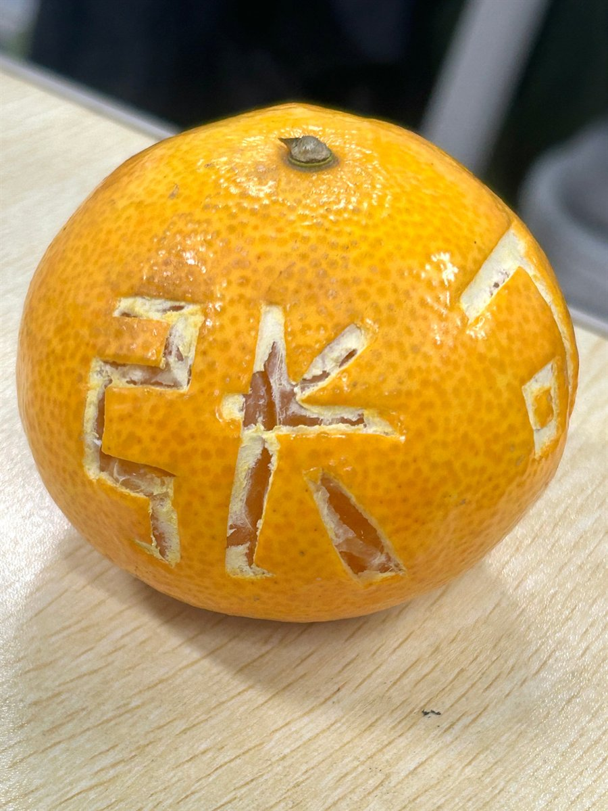
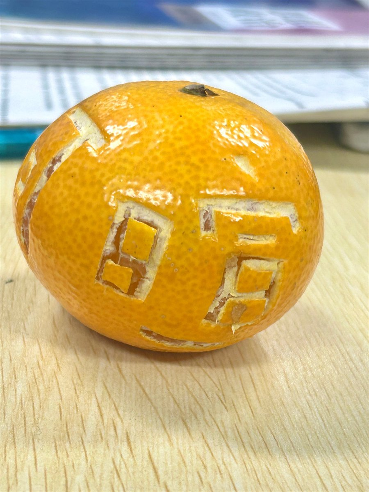
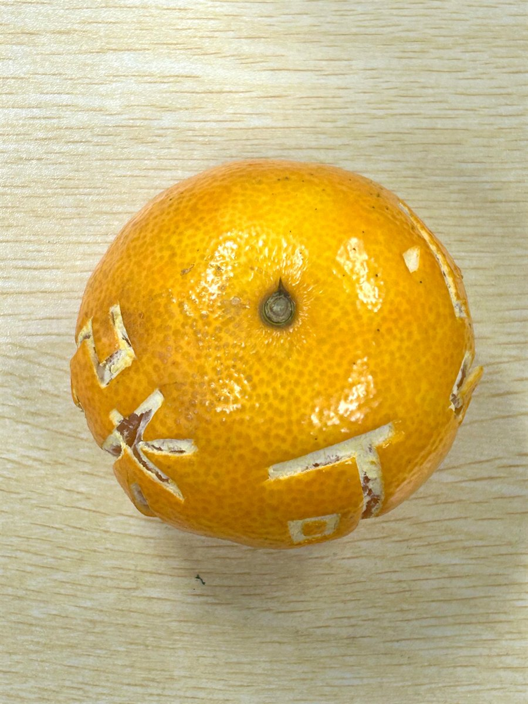
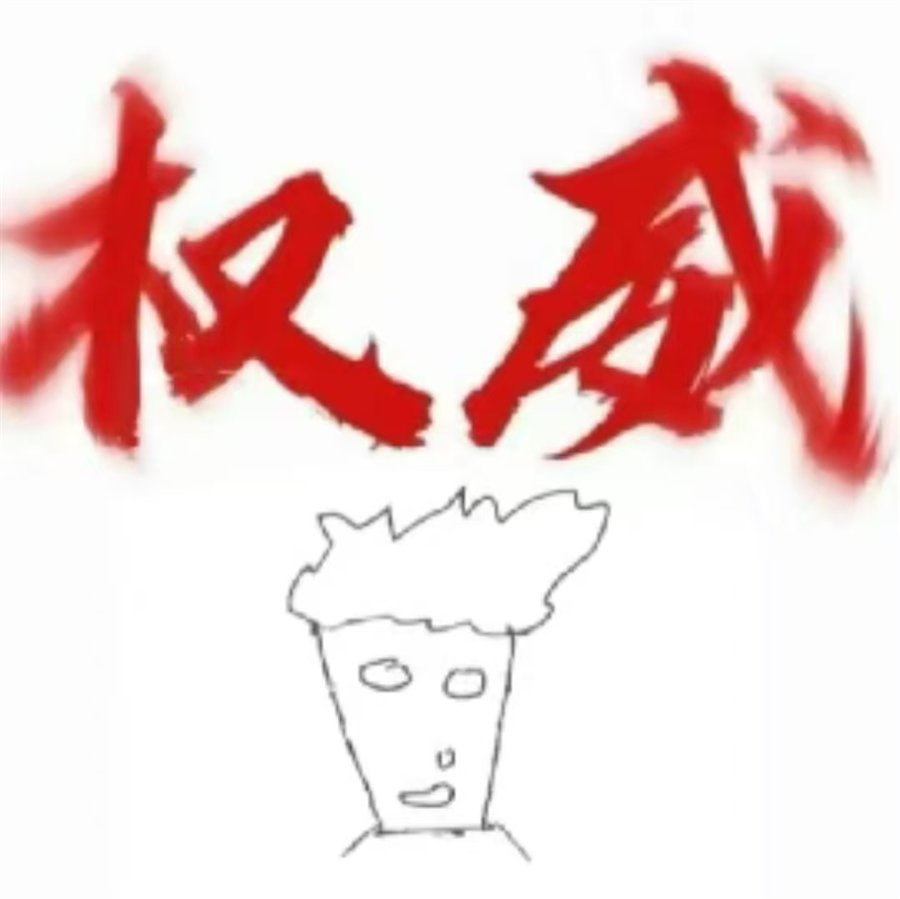
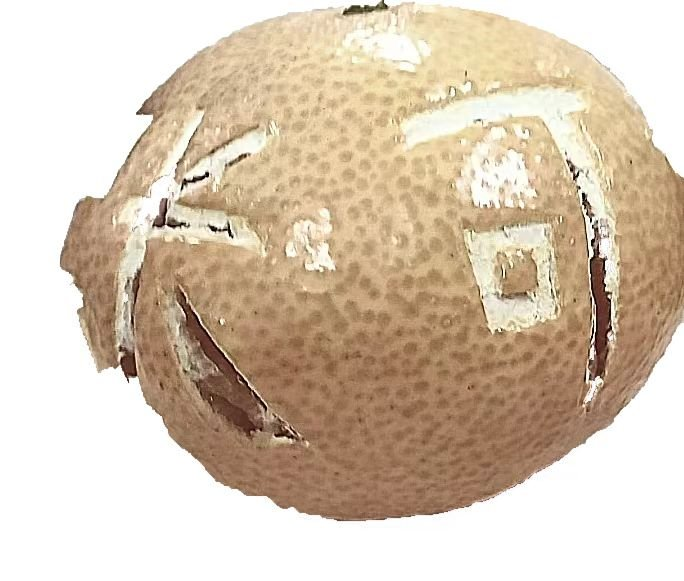

01物种简介 ／ INTRO
尼尔多龙是一种听力不太好的生物，很少有人见过。据说百年前它就生活在原新华动物园野生保护区一座叫九崒的山上，是那里的原住民。
物种展板 ／ SPECIES PANEL
—— 一种听力不太好的生物，很少有人见过。现存一枚龙蛋。
尼尔多龙是一种听力不太好的生物，很少有人见过。据说百年前它就生活在原新华动物园野生保护区一座叫九崒的山上，是那里的原住民。
后来人类在那里建起了动物园，因为它听不清指令，园方只好把它赶走。飞离动物园的过程中，它把唯一的一颗龙蛋交给了一位日本匠人——爆米花·远。
时过境迁，人们在九崒山上挖出了当年那颗龙蛋，只是上面多了些文字。据史书记载，这应该是爆米花先生的雕刻；至于上面名字的具体含义，没有记载。也许是当年那只龙的名字？




⚠ 它听不太清，请靠近一点、大声一点
你可以与龙蛋对话，但它的听力似乎不太好……
